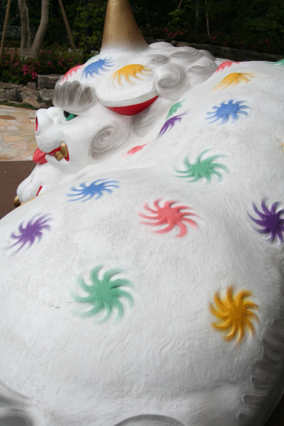
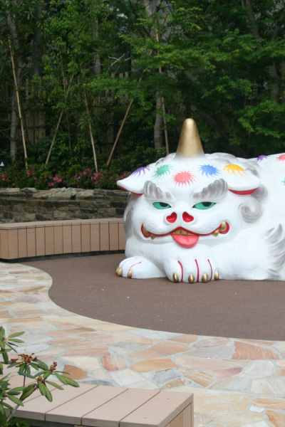
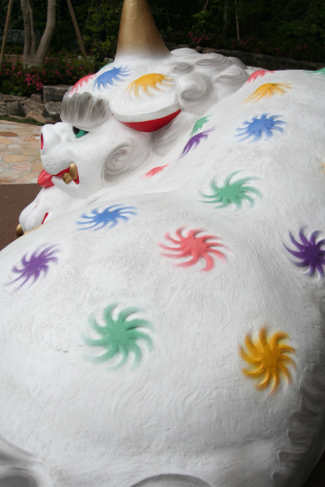
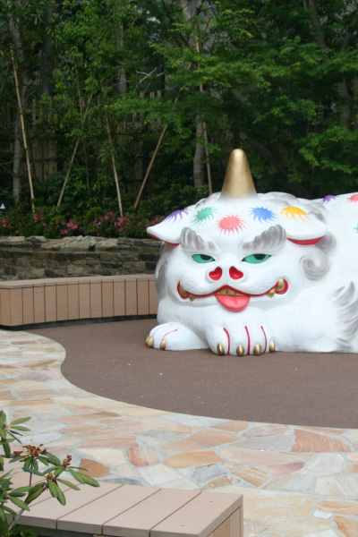
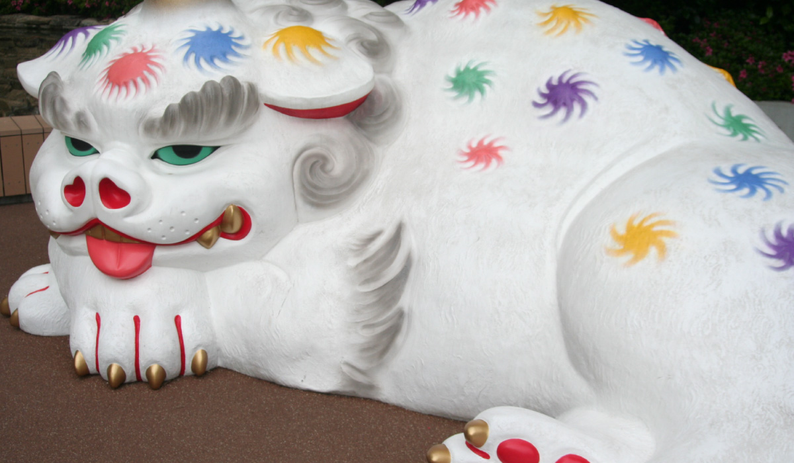
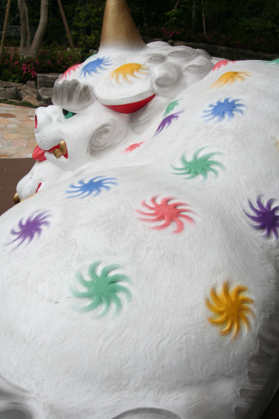
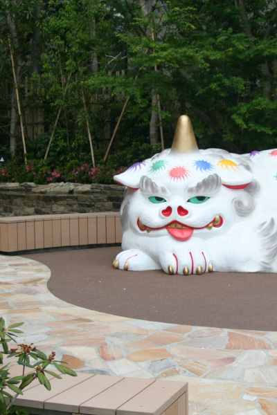

中村 弘峰


博多人形の老舗「中村人形」。『大名の大狛犬』は中村人形4代目の中村弘峰氏が制作した。
福岡の都心にできた新たなランドマーク「福岡大名ガーデンシティ」。「この狛犬の上で、
登ったりはしゃいだりして遊んでもらいたい」と作者はコメントしているように、緑豊かな
福岡大名ガーデンシティ・パークにふさわしいモニュメントとして、大名の森に住む守り神
をコンセプトにデザインされた。子供たちが登ったり、寝転んだり、触れて遊べる遊具とし
て考えられ、他のアート作品とは一味違う、積極的に触れることができる「コミュニケーシ
ョンアート」だ。「この狛犬の上で、登ったりはしゃいだりして遊んでもらいたい」と作者
はコメントしている。日本独自の存在である狛犬とザ・リッツ・カールトンのエンブレムで
もあるライオンを一対の守り神として、創作された。大名の新しいシンボルになる作品だ。